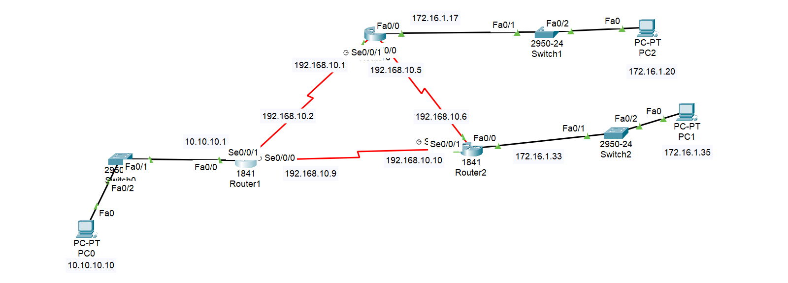

Router0:
Router(config)#router ospf 1
Router(config-router)#network 192.168.10.4 0.0.0.3 area 0
Router(config-router)#network 192.168.10.0 0.0.0.3 area 0
Router(config-router)#network 172.16.1.16 0.0.0.15 area 0
Router(config-router)#end
Router1:
Router(config)#router ospf 1
Router(config-router)#network 192.168.10.8 0.0.0.3 area 0
Router(config-router)#network 192.168.10.0 0.0.0.3 area 0
Router(config-router)#network 10.10.10.0 0.0.0.255 area 0
Router(config-router)#end
Router2:
Router(config)#router ospf 1
Router(config-router)#network 192.168.10.4 0.0.0.3 area 0
Router(config-router)#network 172.16.1.32 0.0.0.7 area 0
Router(config-router)#network 192.168.10.8 0.0.0.3 area 0
Router(config-router)#end